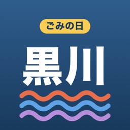

大和町・大郷町・大衡村のごみ収集日と、捨て方がすぐ分かるアプリ（非公式）
町村や組合の公式アプリですか？
いいえ。大和町・大郷町・大衡村が公開している収集計画表と、黒川地域行政事務組合の「ごみの分別と出し方 保存版」をもとに、個人が作った非公式のアプリです。最終的な収集日は、町村のお知らせとごみステーションの掲示でご確認ください。
富谷市は使えますか？
使えません。富谷市は黒川郡から外れていて、ごみの収集の仕組みも別です。
新聞・雑誌・段ボールの日が、町によって違います。
はい。町村の計画表のとおり、大和町はリサイクル2、大郷町はリサイクル1、大衡村は資源ごみの日に出します。アプリは選んだ町村に合わせて表示します。
ごみステーションの掲示と曜日が違います。
設定タブの「収集曜日」でスイッチを入れると、区分ごとに曜日を直せます。直した曜日は通知とウィジェットにも使われます。
年末年始の収集日は？
計画表のきまり（12月29日・30日は燃えるごみだけ、12月31日〜1月3日は休み）から計算しています。大郷町は地区ごとに29日か30日のどちらかです。町村のお知らせもあわせてご確認ください。
「推定」と出る品目は？
組合の「ごみの分別と出し方」に載っていない品目です。ほかの自治体のオープンデータ（CC BY ほか）の分け方を参考に、黒川のきまりに当てはめたアプリの目安で、町村や組合の公式な分け方ではありません。
通知が届きません。
iPhone の「設定」→「通知」→「黒川ごみの日」で通知がオンになっているか、アプリの通知タブで区分と時刻を1つ以上選んでいるかをご確認ください。通知タブのいちばん下の「通知が来ないとき」からテスト通知も送れます。
不具合やご要望は、メールでお知らせください。
収集日のデータ：大和町「ごみ分別と収集日程表」、大郷町「ごみ収集計画表」、大衡村「家庭ごみ収集計画表」。捨て方：黒川地域行政事務組合「ごみの分別と出し方 保存版（令和6年4月〜）」の品目名と分け方（説明はアプリで書き直したもの）。推定の参考：各自治体のオープンデータ（CC BY ほか）。郵便番号：日本郵便。